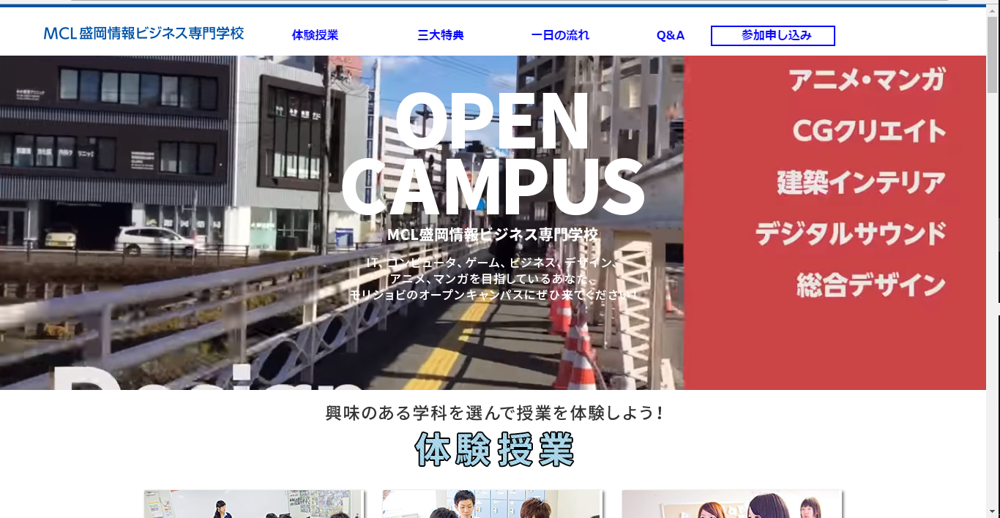
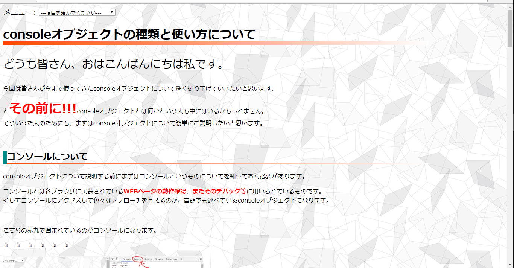
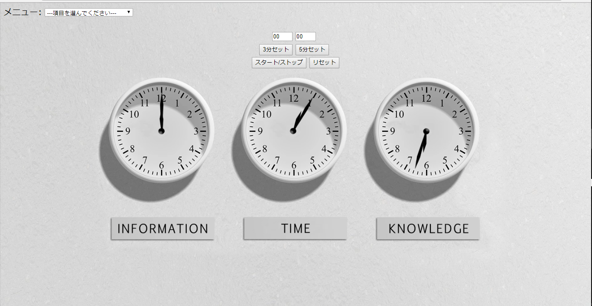

Top
Story
Works
Contact
Works
これまで私はたくさんのWEB作品を作って来ました。このページでは私の今までのWEB作品を画像で紹介していきたいと思います。

morijyobi image site
このウェブサイトはもとの盛ジョビのサイトをもとにして作った架空のものになります。 背景に動画を流す所は特にこだわったポイントと言えます。URL:
https://fumin2354.github.io/index2.html

console object site
このウェブサイトはHTMLのコーディングに用いられるconsoleオブジェクトの使い方についてまとめたものになります。 分かりやすく紹介するためにボタンをクリックしたら別のページでサンプルを見れるようになっています。 URL:
https://fumin2354.github.io/console.html

timer site
このサイトではタイマーを使って時間をはかることが出来ます。また3分セットのボタンや、5分セットのボタンを使うことで手軽にタイマーをセットすることが出来ます。URL:
https://fumin2354.github.io/timer1.html